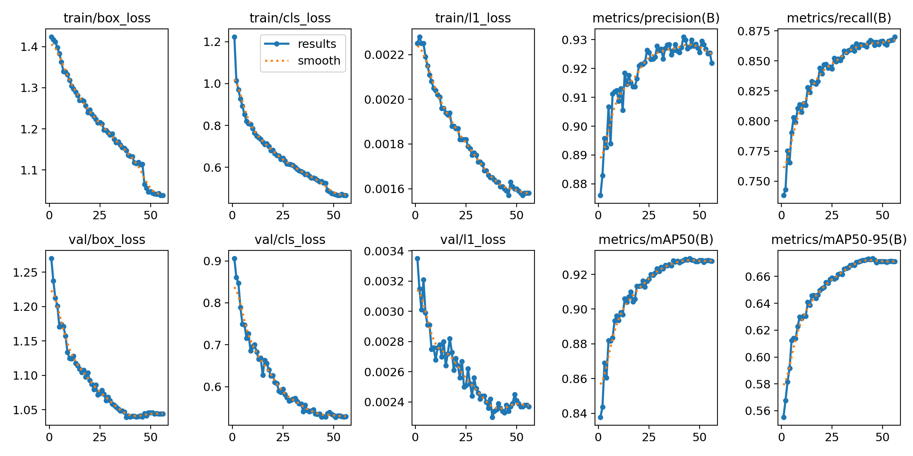

The system running
Untrained detector on top, fine-tuned detector below. Bright boxes are moving vehicles, grey boxes are parked. The panel tracks counts, unique IDs and confidence as the clip plays.
How it works
-
Detect
YOLO26s fine-tuned on VisDrone: 6,471 aerial images and 188,621 vehicle boxes, collapsed into a single vehicle class because car-versus-truck labels from 120 m are mostly noise.
-
Clean the training data
VisDrone's “ignored regions” are masked out, so a correct detection inside one is no longer punished as a false positive. Every image is then scored for camera angle by comparing box sizes at the top and bottom of the frame; only 8% were near-nadir, so those were oversampled to 19%.
-
Track
BoT-SORT with global motion compensation, and a track buffer widened from 30 to 90 frames because the default assumes 30 fps footage while these clips are 60.
-
Analyse
Drone drift is measured from ground features with sparse optical flow and subtracted. A vehicle counts as moving if it travels more than 25% of its own body length in half a second — roughly 8 km/h, and independent of altitude.
Results
Measured on my own footage, which the model never saw during training. Same tracker and settings in both columns, so the detector is the only thing that changed.
| Metric | COCO | Fine-tuned |
|---|---|---|
| Unique track IDs | 177 | 62 |
| Flicker tracks (<10 frames) | 100 | 16 |
| Median track lifetime | 0.1 s | 1.3 s |
| Median confidence | 0.70 | 0.84 |
| Metric | COCO | Fine-tuned |
|---|---|---|
| Vehicles per frame | 10.4 | 22.2 |
| Median confidence | 0.38 | 0.83 |
| Detections below 0.4 | 56% | 2% |
| Median track lifetime | 0.6 s | 1.5 s |
On the benchmark
On VisDrone's validation set the fine-tuned model reaches 0.929 mAP50 and 0.673 mAP50-95, with 0.927 precision and 0.866 recall. Split by camera angle, the straight-down subset scores 0.976 mAP50 against 0.927 for tilted views — though that subset holds only 42 images, so treat it as an indication rather than a measurement. These numbers are not comparable to published VisDrone results, which score ten classes including pedestrians and bicycles.
Training ran for 56 epochs in 10 hours on a free Kaggle T4. Validation loss flattened and mAP plateaued around epoch 45, so the errors that remain are a domain gap, not undertraining.

What it still gets wrong
- Occlusion breaks identity. A vehicle passing under a bridge or dense tree canopy comes out the other side with a new ID. Recovering identity through occlusion, not detection, is the next real problem.
- Frame edges create phantoms. A vehicle that leaves the frame and returns is counted as a new arrival, which inflates the unique-ID total.
- Drift correction has limits. The moving-versus-parked split degrades when the aircraft yaws hard, or when vehicles fill enough of the frame that there is little static ground left to measure against.
- No hand-counted ground truth. Unique IDs is a proxy for tracking quality, not a measurement of it. Proper MOTA/IDF1 scoring needs labelled clips, which is the next piece of work.
- One class only. Merging car, van, truck and bus fixed the label flapping, at the cost of any vehicle-type breakdown.
Run it yourself
Everything is in the repository: dataset preparation, training, evaluation and the rendering pipeline that produces the videos above.
git clone https://github.com/krawat11/aerial-car-tracking.git
cd aerial-car-tracking
uv sync
# prepare VisDrone, then fine-tune (a GPU is strongly recommended)
uv run python scripts/prepare_visdrone.py
uv run python scripts/refine_visdrone.py
uv run python scripts/train.py --name visdrone_v1 --hours 10
# track a clip and render the analytics video
uv run python scripts/baseline.py --video my_clip.mp4 --model models/visdrone_v1.pt \
--tracker configs/botsort_60fps.yaml --no-video
uv run python scripts/render.py --video my_clip.mp4Training runs on a free Kaggle T4 through notebooks/kaggle_train.ipynb.